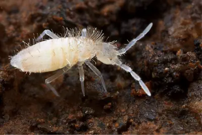
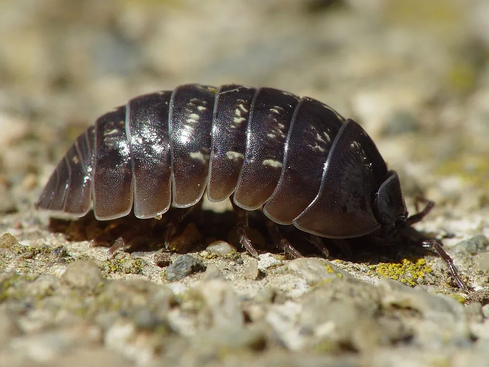
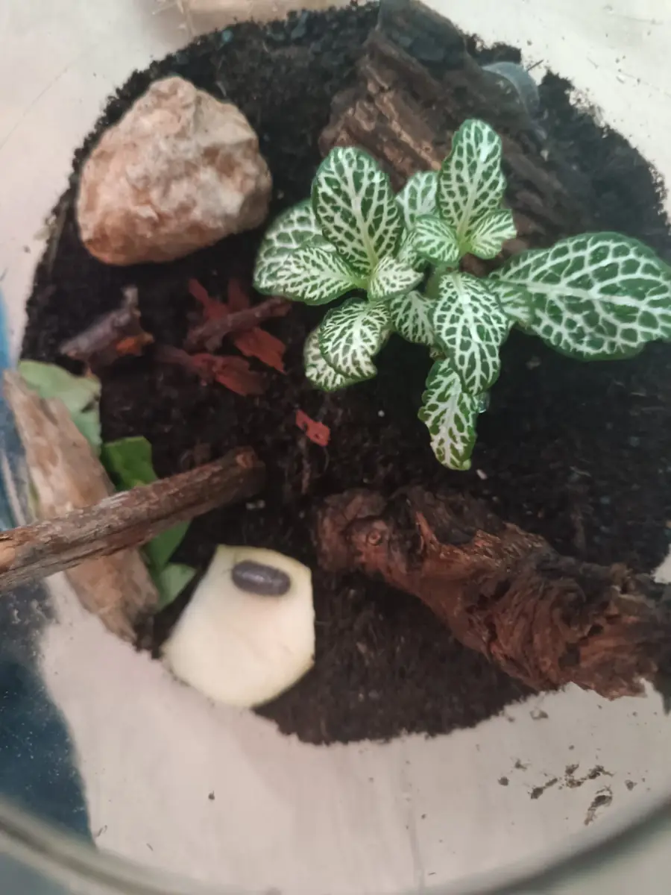

Los terrarios más longevos son aquellos que son bioactivos. Aunque es cierto que puedes hacer un ecosistema funcional simplemente echando hojas caídas o tierra del parque (porque ya contienen bacterias que descomponen la materia orgánica), desde mi experiencia recomiendo introducir a unos bichos que ayudan mucho con el reciclaje: los colémbolos y los bichos bola.
1. ¿Qué son y cómo se reparten el trabajo?
Tanto los bichos bola (isópodos) como los colémbolos (hexápodos) tienen un papel muy importante en la naturaleza y también lo van a tener dentro de nuestro terrario. Su trabajo es descomponer todo lo que cae al suelo, aunque cada uno se especializa en una cosa específica:
Los colémbolos: Son muy pequeñitos (miden 1 o 2 milímetros) y de color blanquecino. Se encargan del "micro-reciclaje". Les gusta mucho el moho y los hongos, así que, si por algún motivo hay demasiada humedad en el terrario, los colémbolos van a ayudarnos a protegerlo y cuidarlo.

Foto: AJC1, CC BY-SA 2.0, vía Wikimedia Commons.
Los bichos bola: Son bastante más grandes. Se comen la materia orgánica grande: hojas secas, madera en descomposición o restos de vegetales.

Foto: Franco Folini, CC BY 2.5, vía Wikimedia Commons.
2. El ciclo de los nutrientes: la prueba de la manzana
Estos dos tipos de bichitos son los responsables del ciclo de la reutilización de los nutrientes, así que si no existiesen, las cosas simplemente se pudrirían y perderían todo su valor.
Si echásemos un trozo de manzana a nuestro terrario para aportar nutrientes naturales a tus plantas, a menos que tuviésemos a nuestro "escuadrón de limpieza", ese trozo de manzana acabaría poniéndose negro y se llenaría de moho peludo, atrayendo plagas, como mosquitas o nematodos, las cuales atacarían a todo nuestro terrario.
Sin embargo, si disponemos de ellos, los bichos bola se comerán la manzana y los colémbolos atacarán cualquier rastro de moho que intente salir. Después, ambos le cederán los nutrientes a la tierra a través de sus heces.
3. Cómo conseguirlos (y no meter plagas en casa)
A la hora de introducirlos en tu ecosistema, tienes dos vías:
Para los bichos bola, yo suelo conseguirlos directamente en el parque. Suelen salir cuando hay humedad, así que mi recomendación es salir a buscar pronto por la mañana, justo al amanecer. Levanta piedras, mira debajo de macetas, en esquinas húmedas o debajo de troncos de madera medio podridos.
Los colémbolos es imposible encontrarlos en la calle porque son microscópicos y no se les ve. En este caso, lo más sencillo y seguro es comprar una pequeña tarrina de cultivo inicial, vuelcas un poco de la tarrina en el terrario y ya está.

4. Problemas habituales y cómo solucionarlos
El problema más común con los bichos bola: la superpoblación. Se reproducen bastante rápido si el terrario tiene buena temperatura y humedad constante. Cuando hay demasiados, empiezan a escasear las hojas secas y lo siguiente que atacan son las plantas vivas. La solución es sencilla: echa hojarasca seca de la calle cada dos semanas, o trozos de piel de manzana o de patata. Con eso los tienes entretenidos y no tocan lo que no deben. Si aun así ves que hay demasiados, no pasa nada por sacar unos cuantos y soltarlos en el parque.
Con los colémbolos el problema suele ser el contrario: desaparecen. Si de repente dejas de verlos (aunque sean difíciles de ver de por sí), normalmente es porque el terrario está demasiado seco. Los colémbolos necesitan humedad para sobrevivir. Si llevas días sin pulverizar y la tierra está seca, es probable que hayan muerto. La solución es volver a añadir una pequeña cantidad de cultivo nuevo.
¿Y si aparece moho aunque tenga colémbolos? Pasa, sobre todo al principio, cuando el ecosistema todavía no está estabilizado. No es señal de catástrofe. Los colémbolos van a ir a por él, pero si el brote de moho es muy grande puedes ayudarles: abre el terrario un par de horas para que ventile, retira físicamente el moho con un palillo o pinza, y reduce el riego durante unos días. En una semana debería estar controlado.
5. Preguntas frecuentes
¿Por qué desaparecen los colémbolos de mi terrario?
Casi siempre porque el terrario está demasiado seco: necesitan humedad para sobrevivir. Si llevas días sin pulverizar y la tierra está seca, es probable que hayan muerto. La solución es volver a añadir una pequeña cantidad de cultivo nuevo y mantener la humedad.
¿Es obligatorio tenerlos para que el terrario funcione?
No es obligatorio, pero sí muy recomendable si quieres que dure años sin que tengas que intervenir. Sin ellos, cualquier hoja caída o raíz muerta se pudre directamente en la tierra y acaba atrayendo moscas de sustrato o generando moho. Se puede vivir sin ellos, pero el mantenimiento es bastante más frecuente.
¿Los bichos bola se escapan del terrario?
Si el terrario tiene tapa, no. Si es abierto, los más pequeños pueden intentarlo, aunque rara vez lo hacen si hay suficiente comida dentro. Lo que sí puede ocurrir es que encuentres alguno fuera cerca del terrario, pero no pasan de ahí. No son una plaga ni van a invadir el salón.
¿Cuántos bichos bola echo en un tarro pequeño?
Con 3 o 4 bichos bola tienes de sobra para empezar en un terrario de tamaño mediano. Ya se encargarán ellos de reproducirse si las condiciones son buenas. Meter 15 desde el principio es el error más habitual y acaba en superpoblación en pocas semanas.
¿Los colémbolos son perjudiciales para las plantas?
No, en absoluto. Solo se alimentan de moho, hongos y materia orgánica en descomposición. Nunca tocan tejido vegetal vivo. Si alguna vez ves uno sobre una hoja, simplemente está de paso.

¿Prefieres que te lo monte yo?
Hago terrarios cerrados por encargo en la Comunidad de Madrid, desde 25 €.
Ver cómo pedir el tuyo →